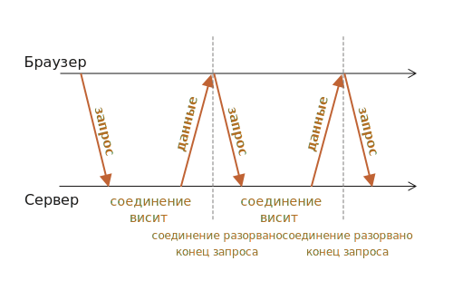

Длинные опросы
Длинные опросы - это самый простой способ поддерживать постоянное соединение с сервером, не используя
при этом никаких специфических протоколов (типа WebSocket или Server Sent Events).
Его очень легко реализовать, и он хорошо подходит для многих задач.
Частые опросы
Самый простой способ получать новую информацию от сервера - периодический опрос. То есть, регулярные запросы
на сервер вида: «Привет, я здесь, у вас есть какая-нибудь информация для меня?». Например, раз в 10 секунд.
В ответ сервер, во-первых, помечает у себя, что клиент онлайн, а во-вторых посылает весь пакет сообщений,
накопившихся к данному моменту.
Это работает, но есть недостатки:
-
Сообщения передаются с задержкой до 10 секунд (между запросами).
-
Даже если сообщений нет, сервер «атакуется» запросами каждые 10 секунд, даже если пользователь
переключился куда-нибудь или спит. С точки зрения производительности, это довольно большая нагрузка.
Так что, если речь идет об очень маленьком сервисе, подход может оказаться жизнеспособным, но в целом,
он нуждается в улучшении.
Длинные опросы
«Длинные опросы» - гораздо лучший способ взаимодействия с сервером.
Они также очень просто в реализации, и сообщения доставляются без задержек.
Как это происходит:
-
Запрос отправляется на сервер.
-
Сервер не закрывает соединение, пока у него не возникнет сообщение для отсылки.
-
Когда появляется сообщение - сервер отвечает на запрос, посылая его.
-
Браузер немедленно делает новый запрос.
Для данного метода ситуация, когда браузер отправил запрос и удерживает соединение с сервером в ожидании
ответа, является стандартной. Соединение прерывается только доставкой сообщений.

Если соединение будет потеряно, скажем, из-за сетевой ошибки, браузер немедленно посылает новый запрос.
Примерный код клиентской функции subscribe, которая реализует длинные опросы:
async function subscribe() {
let response = await fetch('/subscribe');
if (response.status === 502) {
// Статус 502 - это таймаут соединения;
// Возможен, когда соединение ожидало слишком долго
// и сервер (или промежуточный прокси) закрыл его
// давайте восстановим связь
await subscribe();
} else if (response.status !== 200) {
// Какая-то ошибка, покажем ее
showMessage(response.statusText);
// Подключимся снова через секунду.
await new Promise(resolve => setTimeout(resolve, 1000));
await subscribe();
} else {
// Получим и покажем сообщение
let message = await response.text();
showMessage(message);
// И снова вызовем subscribe() для получения следующего сообщения
await subscribe();
}
}
subscribe();
Функция subscribe() делает запрос, затем ожидает ответ, обрабатывает его и снова вызывает
сама себя.
Сервер должен поддерживать много ожидающих соединений.
Архитектура сервера должна быть способна работать со многими ожидающими подключениями.
Некоторые серверные архитектуры запускают отдельный процесс для каждого соединения. Для большого
количества соединений будет столько же процессов, и каждый процесс занимает значительный объем памяти.
Так много соединений просто поглотят всю память.
Часто такая проблема возникает с бэкендом, написанным на PHP или Ruby, но технически дело не в языке,
а в реализации. На большинстве языков можно написать подходящий сервер, но на некоторых это проще сделать.
Бэкенды, написанные с помощью Node.js, обычно не имеют таких проблем.
Область применения
Длинные опросы прекрасно работают, когда сообщения приходят редко.
Если сообщения приходят очень часто, то схема приема-отправки сообщений, приведенная выше,
становится похожей на «пилу».
Каждое сообщение - это отдельный запрос, с заголовками, авторизацией и так далее.
Поэтому в этом случае предпочтительней использовать другой метод, такой как
WebSocket или
Server Sent Events.